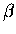
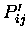
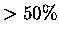
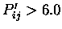

The aim of this work was to provide a set of multiple sequence
alignments derived from structure alone. These alignments have
obvious uses which have been described elsewhere [1,2].
Numerous other means of deriving such alignments have been
presented, but, at the time of the development of STAMP, only one had
been applied to alignments of more than two sequences, and no
systematic method for assessing the quality of the alignments had
been provided. These, then, were the goals of this work.
At the heart of the method is the Argos & Rossmann [3]
equation for expressing the probability of equivalence of
residue structural equivalence:
where dij is the distance between
 atoms for residues iand j, and sij is a measure of the local main chain conformation.
A detailed description of this equation, and how it has been
applied to multiple structures is given in [1].
atoms for residues iand j, and sij is a measure of the local main chain conformation.
A detailed description of this equation, and how it has been
applied to multiple structures is given in [1].
STAMP makes extensive use of the Smith Waterman (SW) algorithm
[4,5,6]. This is a widely used algorithm
which allows fast determination of the best path through a matrix
containing a numerical measure of the pairwise similarity of each
position in one sequence to each position in another sequence. Within
STAMP, these similarity values correspond to modified Pij
values (above).
The result of the SW algorithm applied to a matrix of modified Pijvalues is a list of residue equivalences. From this list, which
we may obtain a set of equivalenced
 positions. These are
used to obtain a best fit transormation and RMS deviation by a
least squares method of [7,8]. This
transformation can be applied in the relevant way to yield two
new sets of coordinates for which calculation (and correction) of
Pij values, the SW path finding and the least squares fitting may
be repeated in an iterative fashion until the two sets of
coordinates, and the corresponding alignment, converge on a
single solution.
positions. These are
used to obtain a best fit transormation and RMS deviation by a
least squares method of [7,8]. This
transformation can be applied in the relevant way to yield two
new sets of coordinates for which calculation (and correction) of
Pij values, the SW path finding and the least squares fitting may
be repeated in an iterative fashion until the two sets of
coordinates, and the corresponding alignment, converge on a
single solution.
This strategy has proved sucessful in the generation of tertiary
structure based multiple protein sequence alignment for a wide
variety of diverse protein structural families
[1,9,10,11,12].
The method can accurately superimpose and obtain alignments for families
of proteins as structurally diverse as the greek key 
sandwich
folds (e.g. immunoglobulin domains, CD4, PapD chaperonin,
azurin, superoxide dismutase, actinotaxin, prealbumin, etc.), the
aspartic proteinase N and C terminal lobes, the Rossmann
fold domains, the globin folds (including phycocyanins and
colicins), and many others.
It is important to remember that this method assumes overall
topological similarity, and will not, without explicit
intervention, be able to superimpose/align structures with common
secondary structures in similar orientations, but different
connectivity or topologies (such as the different types of four helix bundle
proteins: up-down-up-down with up-up-down-down).
Two measures of alignment confidence are provided [1]
1. A structural similarity Score (Sc) is defined in order that
overall alignment quality and structural similarity may be compared
across a wide range of protein structural families. These are defined below.
2. A measure of individual residue accuracy

is
defined in order that residue equivalences may be normalised with
respect to both the number of structures in an alignment and the
length of the structures being aligned.
Alignments having a structural similarity Score Sc between 5.5 and
9.8 imply a high degree of structural similarity and almost always
suggest a functional and/or evolutionary relationship..
Values between 2.5 and 5.5 correspond to more distantly related
structures, and do not always imply a functional or evolutionary relationship.
Values less than 2.0 generally indicate little overall structural similarity.
Stretches of three or more aligned positions with
values greater than 6.0 generally correspond to genuine topological
equivalences, values between 4.0 and 6.0 are equivalent  50 \%$">
of
the time, and values less than 4.0 are generally not equivalent.
Stretches of residues having
 6.0$">
generally correspond to regions of
conserved secondary structure within a family of structures being
compared. For multiple alignments, an alterntaive and more effective
way of assessing residue-by-residue equivalence is provided in POSTSTAMP (see below).
Both of these measures are refered to repeatedly below. For a more
detailed description of their derivation please refer to [1].
In addition, RMSD is used to refer to the root mean square
deviation between atoms selected for a fit. The CUTOFF refers the
lowest allowable
for the program to use a particular
pair of residues in a fit (called `C` in [1]).